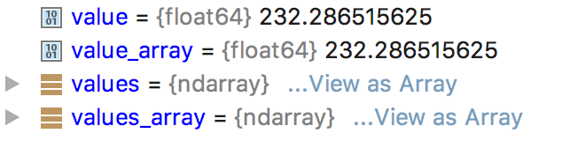

value = codes_get (gid, key, ktype=None)
按原生格式返回 gid 指向的消息中 key 的值。可以使用参数 ktype 指定返回类型（int，str 或 float）
values = codes_get_array (gid, key, ktype=None)
以 NumPy ndarry 或 Python 数组的格式返回数组 key 的内容，ktype 只能是 int 或 float。
values = codes_get_values (gid)
返回以 1 维数组形式返回数据值。
出错时，会抛出 CodesInternalError 异常，包含 C API 接口的错误信息。
from __future__ import print_function
import click
import eccodes
@click.command()
@click.argument('file_path')
def cli(file_path):
with open(file_path, 'rb') as f:
handle = eccodes.codes_grib_new_from_file(f, headers_only=False)
while handle is not None:
date = eccodes.codes_get(handle, "dataDate")
type_of_level = eccodes.codes_get(handle, "typeOfLevel")
level = eccodes.codes_get(handle, "level")
values = eccodes.codes_get_array(handle, "values")
value = values[-1]
values_array = eccodes.codes_get_values(handle, "values")
value_array = values[-1]
print(date, type_of_level, level, value)
eccodes.codes_release(handle)
handle = eccodes.codes_grib_new_from_file(f, headers_only=False)
if __name__ == "__main__":
cli()
从上面代码看，我使用的版本 2.6.0 中，codes_get_array 和 codes_get_values 返回数据值都是 ndarry 类型。
